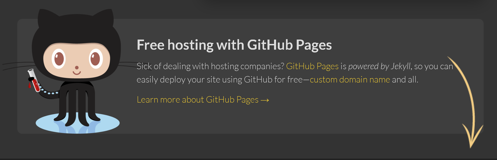
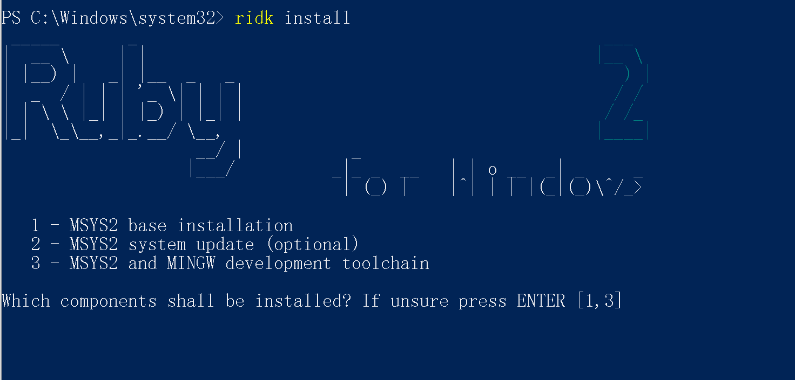
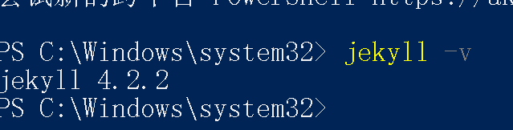
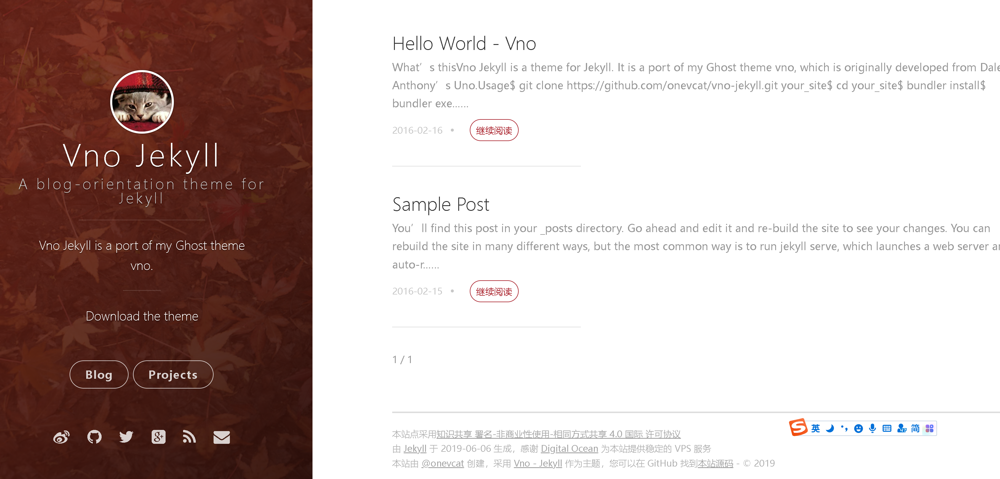
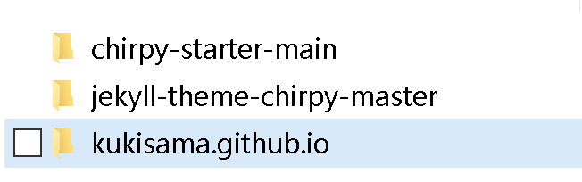
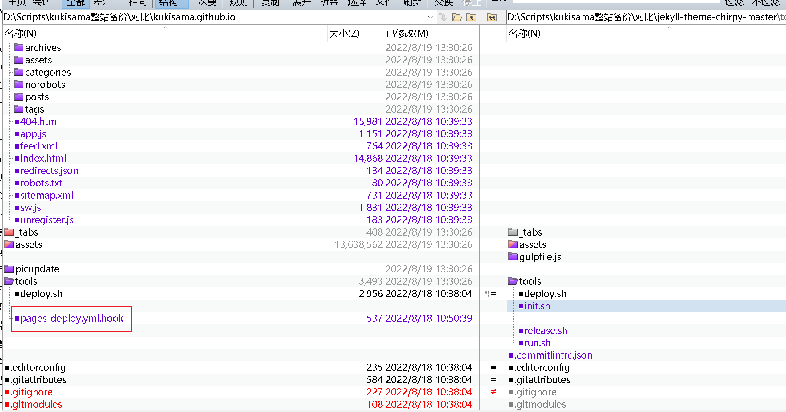

Jekyll 是什么
我的博客是托管在Github Pages上的，使用了一种叫做Jekyll的技术构建。最近由于系统邮件一直告诉我有安全漏洞，需要升级，所以我到处找合适的升级模板。
个人理解，Jekyll 基于Ruby开发的，一种和Github Pages 组合使用的代码生成器。能够将markdown格式的文档，生成为html的静态网页。它的特性或者说是适用场景是明确的：
- MarkDown格式作为输入，最终转换成HTML
- 部署在Github Pages
- 不支持动态技术（ASP/PHP）
安装Jekyll
为了能够升级和调试现有的Jekyll，需要在本地部署它的构造环境。这个事情只需要做一次，所以可以在虚拟机中进行。
由于我已经部署过kukisama.github.io这个库，也配置过自定义域名这些，对在Github中的操作不做过多叙述。
另外我是在Windows下安装Jekyll，所以首先要前往https://jekyllrb.com/docs/installation/windows/查看说明，这里有详细的安装步骤。整个安装步骤比较简单。
1、从RubyInstaller Downloads下载并安装Ruby+Devkit版本。使用默认选项进行安装。

2、 安装结束后会有一个弹窗，3选1，我们选择MSYS2 and MINGW development tool chain。如果不小心关掉了，可以在cmd里面运行ridk install 重新把这个向导拉起来

3、 再执行一下gem install jekyll bundler，这是核心步骤
4、 最后执行jekyll -v，看是否成功安装

配置安装Jekyll
完成环境安装之后，接下来要开始做基础配置。
操作都在PowerShell下执行，一行一行做，相对比较简单。下面的流程说明是针对一个一穷二白的空Jekyll而言的。
1
2
3
4
5
6
7
8
9
10
11
12
13
14
15
16
#首先创建一个c:\work的目录，然后前往这个目录。
cd c:\work
#用jekyll初始化博客站点kukisama.github.io，在做这个操作之前，要提前用VScode将整个kukisama.github.io拉回来，也就是说，kukisama.github.io目录是实际存在的。
jekyll new kukisama.github.io
#前往这个目录
cd kukisama.github.io
#将这个目录变成可用的http站点，直接访问下面的地址即可看到实际效果
#http://localhost:4000
bundle exec jekyll serve
# 如果系统是Ruby 3.0.0，且发现服务器起不来，输入这条命令
# bundle 本身会在各种回显上进行提示，如果有报错，注意看下错误信息中关于bundle 的内容，按照提示可以修复错误。
bundle add webrick
#因为本身Jekyll是个代码生成器，修改MD并不是立刻映射到html文件上。
#可以用这条命令启动服务，这样文件被改变之后，会即刻刷新网页
bundle exec jekyll serve --livereload
可以用下面这个链接，进行测试
http://localhost:4000
链接地址是本地的虚拟的服务器地址，端口固定。
## 套用chirpy模板
和Wordpress类似，要想输出好看，自己又不会写代码，就需要自己找个模板套上去。
之前用的模板是https://github.com/onevcat/vno-jekyll的模板，大概是这个样子的。问题在于这个版本已经很久不更新了，然后Github报告站点用的模块有漏洞，必须要升级修复。因为没有新版本，所以只能更换。

戏剧性的是，Vno-jekyll的作者自己也不用这个模板了，他用了 Chirpy 作为主题，感觉两个主题差不多，而且我不太想在这个事情上花太多功夫，我就也准备用 Chirpy

这次犯了经验主义错误，我首先去Github找Chirpy的项目 https://github.com/cotes2020/jekyll-theme-chirpy ，然后按照以前使用Vno-jekyll的惯例，直接把整个站点代码克隆下来，放到自己的本地Jekyll目录中了，然后上传，等待同步。
很显然这么搞失败了，而且在问题列表中看到，也有人和我出现一样的错误。花了一天半也没有搞定.

没办法只能回来认真看文档，第一步就发现不一样了。我所在的项目叫jekyll-theme-chirpy，但是它需要克隆的代码库叫做Chirpy Starter ……


按照提示，创建这个特定的存储库，然后看到有这么一句，我来到演示网站，这会才真的算是找对了方向。也就是说，它的真正的部署手册是https://chirpy.cotes.page/posts/getting-started/
另外 https://github.com/cotes2020/jekyll-theme-chirpy/tree/master/_posts 这里有这个模板适用的相关语法可供查询，对应的前端页是https://chirpy.cotes.page/
梳理模板部署过程
根据官方文档和实践，整理一下这个测试确认好使的部署过程：
首先用Chirpy Starter 创建特定存储库
用VSCODE把代码拉回来
提前配置安装
Jekyll环境前往克隆回来的本地代码库目录
- 执行
bundle安装依赖 - 修改代码库目录中
_config.yml文件中url部分，改成自己的xxx.github.io_config.yml有很多自定义选项，都不是太复杂，根据例子自行修改就可以了- 不同模板的
_config.yml都不一样，大家的定义不一样，不能想当然的照抄，只能看模板作者的例子。
- 因为我的电脑是windows，所以要运行一次
bundle lock --add-platform x86_64-linux - 虽然我的站点有自定义域名，但是注意以前的配置方式（配置CNAME文件）已经失效了，在
_config.yml文件中只需要定义xx.github.io - 确保站点有
.github/workflows/pages-deploy.yml这个文件。- 其值
on.push.branches应与您的 repo 的默认分支名称相同 - 由于以前的
master这个分支名被改成了比较中性的main，新弄的库都是main，老一点的是master，这里如果不一样，会导致Github Action无法触发。只能说大家都是受害者。
- 其值
- 执行
任意做一个修改,比如在POST目录提交一个文档，然后用VScode提交一次合并，会自动触发Github Action自动化的执行一些作业。这个时候，打开在 GitHub 上的存储库。选择选项卡Settings，然后单击左侧导航栏中的Pages，然后在*GitHub Pages的
源中，选择gh-pages的目录作为发布源。离开前记得点击。/(root)gh-pagesSave。
之前用的
Vno-jekyll有很多年了，也可能是这两年的架构演进。chirpy的逻辑是主线发布不做任何修改，实际会生成站点目录结构的html文件到gh-pages分支上。至少以前是没有这种自动创建新分支并发布的逻辑的。不太懂html，但是觉得这种逻辑生成的html，由于不需要做任何运算，单纯展示，连地址栏都不需要做转换，应该速度会比动态生成的快一些。

对比代码差异
事实上我对于只能用 chirpy-starter-main部署，而不能用jekyll-theme-chirpy-master部署比较好奇，这两者的差异应该怎么分辨呢？

可以使用Beyond Compare 4来进行文件对比，当然其他任何能够做对比的软件都可以。经过对比之后，发现两边的文件不能说是一模一样，只能说是差之千里。

比如上面文档中提到的.github/workflows/pages-deploy.yml这个文件。chirpy-starter-main用的分支是main，而jekyll-theme-chirpy-master用的是master，这个可能是关键差异，除此之外的差异还包括jekyll-theme-chirpy-master使用了更多的插件，直接套用也可能有兼容性问题，由于我对html所知甚少，所以也就不再深挖。

Github Action 问题处理
在部署过程中，通过给POST目录上传markdown文档，我发现偶尔会部署失败。通过检查检查Action的部署过程，发现这是个不错的排错的窗口。

例如发现Deploy有错误，展开之后可以看到，错误提示是 Html-proofer found 1failure。通过仔细看代码，发现是超链接前面多了一个#，在Markdown中，这个错误并不致命，也不影响显示，但是在代码生成过程中就出错了。解决方法就是回去修改POST目录下的实际文件，修改好后VScode重新提交更改。等待刷新。

Jekyll 主题
以下是一些主题站
- jekyllthemes.org http://jekyllthemes.org/
- jekyllthemes.io https://jekyllthemes.io/
- jekyll-themes.com https://jekyll-themes.com/
- Start Bootstrap https://startbootstrap.com/
- Github https://github.com/topics/jekyll-theme
- jekyll-TeXt-theme https://github.com/kitian616/jekyll-TeXt-theme
推荐最后一个， TeXt Theme 它最大最大的好处是，中文！